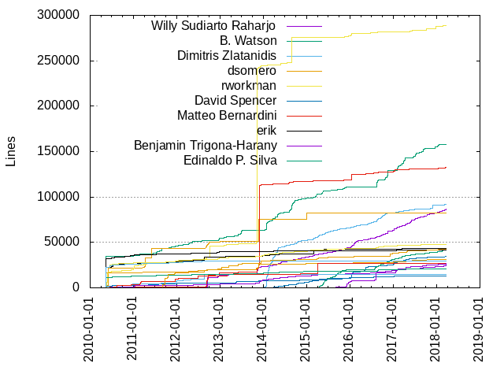
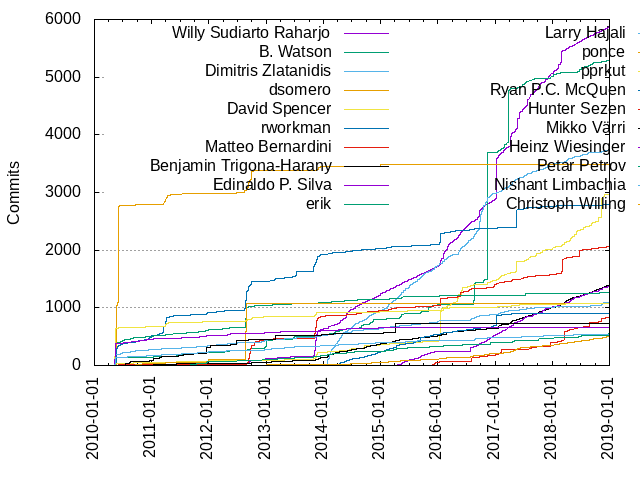

Authors
| Author | Commits (%) | + lines | - lines | First commit | Last commit | Age | Active days | # by commits |
|---|
| Willy Sudiarto Raharjo | 5654 (9.79%) | 89900 | 80404 | 2010-06-18 | 2018-07-21 | 2955 days, 1:43:18 | 1207 | 1 |
| B. Watson | 5174 (8.95%) | 162743 | 37256 | 2010-03-04 | 2018-07-21 | 3061 days, 0:49:37 | 538 | 2 |
| Dimitris Zlatanidis | 3661 (6.34%) | 92841 | 21696 | 2014-01-03 | 2018-07-21 | 1659 days, 6:28:47 | 890 | 3 |
| dsomero | 3485 (6.03%) | 81961 | 110184 | 2010-04-25 | 2015-01-16 | 1726 days, 10:13:52 | 129 | 4 |
| rworkman | 2777 (4.81%) | 288352 | 199342 | 2010-02-23 | 2018-07-13 | 3062 days, 9:42:56 | 538 | 5 |
| David Spencer | 2397 (4.15%) | 35836 | 27336 | 2010-05-12 | 2018-07-19 | 2990 days, 17:04:50 | 446 | 6 |
| Matteo Bernardini | 2009 (3.48%) | 133052 | 28833 | 2010-05-29 | 2018-07-20 | 2973 days, 10:15:45 | 483 | 7 |
| erik | 1255 (2.17%) | 43195 | 15943 | 2010-03-04 | 2018-07-04 | 3043 days, 23:22:15 | 330 | 8 |
| Benjamin Trigona-Harany | 1230 (2.13%) | 28736 | 8373 | 2010-06-24 | 2018-07-20 | 2947 days, 23:56:59 | 596 | 9 |
| Edinaldo P. Silva | 1219 (2.11%) | 43883 | 9253 | 2015-04-17 | 2018-07-14 | 1183 days, 22:05:02 | 362 | 10 |
| ponce | 1083 (1.87%) | 14952 | 6385 | 2010-09-21 | 2012-08-28 | 707 days, 10:26:39 | 83 | 11 |
| pprkut | 1070 (1.85%) | 30944 | 104010 | 2010-05-11 | 2018-03-18 | 2867 days, 8:43:53 | 99 | 12 |
| Larry Hajali | 1030 (1.78%) | 47818 | 14298 | 2010-03-04 | 2018-07-06 | 3046 days, 1:48:41 | 497 | 13 |
| Ryan P.C. McQuen | 909 (1.57%) | 12858 | 6262 | 2014-01-03 | 2017-04-13 | 1195 days, 10:27:02 | 312 | 14 |
| Mikko Värri | 723 (1.25%) | 26491 | 5720 | 2010-07-17 | 2015-03-29 | 1716 days, 20:50:05 | 62 | 15 |
| Hunter Sezen | 669 (1.16%) | 29760 | 5354 | 2015-07-07 | 2018-07-20 | 1109 days, 1:15:47 | 172 | 16 |
| Heinz Wiesinger | 665 (1.15%) | 41338 | 12182 | 2010-03-04 | 2017-01-31 | 2525 days, 3:35:53 | 110 | 17 |
| Nishant Limbachia | 533 (0.92%) | 20996 | 6532 | 2010-03-04 | 2018-07-16 | 3056 days, 20:31:00 | 215 | 18 |
| Petar Petrov | 517 (0.89%) | 44192 | 9294 | 2011-08-17 | 2018-07-14 | 2522 days, 10:40:37 | 108 | 19 |
| Robby Workman | 493 (0.85%) | 29345 | 7902 | 2010-03-06 | 2012-09-16 | 925 days, 4:27:49 | 78 | 20 |
These didn't make it to the top: Marcel Saegebarth, Niels Horn, Christoph Willing, Mario Preksavec, Andrew Clemons, Kyle Guinn, Audrius Ka≈æukauskas, Andre Barboza, David Woodfall, LukenShiro, michiel, Dugan Chen, Chris Novakovic, Zachary Storer, M.Dinslage, Aleksandar Samardzic, Binh Nguyen, David Somero, ArTourter, Marco Bonetti, Vincent Batts, Barry J. Grundy, Markus Reichelt, LEVAI Daniel, Edward W. Koenig, Brenton Earl, Andrzej Telszewski, Aaditya Bagga, Panagiotis Nikolaou, Fridrich von Stauffenberg, Alexander Verbovetsky, Michales Michaloudes, Andreas Guldstrand, Donald Cooley, Thibaut Notteboom, Frank Caraballo, R. S. Ananda Murthy, Andreas Voegele, T3slider, Eugene Wissner, Roberto Neri, Pierre Cazenave, Martin Lefebvre, Jostein Berntsen, Glenn Becker, Grigorios Bouzakis, Antonio Hern√°ndez Blas, crocket, Menno Duursma, Eugen Wissner, Christopher Walker, DhabyX, Chess Griffin, Michael Wagner, Cezary M. Kruk, Eugene M, Jeremy Hansen, JK Wood, Johannes Schoepfer, Yth - Arnaud, Phillip Warner, Zhu Qun-Ying, Chris Abela, Thomas Morper, Philip Lacroix, slakmagik, Zbigniew Baniewski, Kent Fritz, Luis Henrique, Fernando Lopez Jr, David Melik, Edward Koenig, Leonard Schmidt, Sebastien BALLET, Michal Bialozor, titopoquito, Daniil Bratashov, mario, Philip van der Hoeven, Menno E. Duursma, Paul Wisehart, Iskar Enev, Nikos Giotis, Gethyn ThomasQuail, Ozan T√ºrkyƒ±lmaz, Pablo Santamaria, Tim Dickson, powtrix, khronosschoty, Murat D. Kadirov, Daniel LEVAI, Grissiom, Cristiano Urban, Erik Falor, David Sullins, Andrew Brouwers, Mikko Varri, Klaatu, hollywoodb, Alan Alberghini, Niklas Nille √Ökerstr√∂m, Heiko Rosemann, melikamp, Serban Udrea, Markus Rinne, larryhaja, klaatu, vvoody, Giorgio Peron, Lionel Young, Giovanne Castro, Christophe Trussardi, Roberto Metere, Andrew Strong, Giuseppe Di Terlizzi, Daniel de Kok, Miguel De Anda, Erwin van Zanten, Gerardo Zamudio, Fellype do Nascimento, dslackw, markus reichelt, Andrey Maraev, Yalla-One, Stu Miller, Skaendo, Richard Narron, Mauro Giachero, R.S.Ananda Murthy, Azure Zanculmarktum, Markus Hutmacher, Dominik Drobek, Bill Kirkpatrick, pyllyukko, core, Ruben Schuller, Matthew Fillpot, V'yacheslav Stetskevych, Richard Ellis, Peter Wang, Diogo Leal, Adis Nezirovic, John Vogel, Gilcio Amaral, David O'Shaughnessy, Jorge Giner, Thomas Szteliga, Andy Bailey, alkos333, Nikolay Korotkiy, Didier Spaier, Michael Johnson, Jan F. Chadima, Euan Thoms, Duncan Roe, Dario Nicodemi, Carlos Corbacho, Amit Ugol, skaendo, Felix Pfeifer, Alan Aversa, Rodrigo Gimenez, Marco Cecchetti, Daniel Stolarski, Bojan Popovic, Andrew Tkalia, Alan Hicks, nomnombtc, Timothy Pollard, Kevin Paulus, James Geboski, Ferenc Deak, Dhaby Xiloj, Chris Farrell, Vasilis Papavasileiou, Oleg O. Chukaev, Jick Nan, stormtracknole, otzy_007, Steven Pledger, Sean Donner, Pedro Mendes, Niki Kovacs, Nate Bargmann, MagicMan, Daniel Prosser, Vliegendehuiskat, Tracy Williams, Thorn Inurcide, Marcin Herda, Jason Graham, Eugene Suter, Zordrak, Strahil Yordanov, Leo C, Ekin Akoglu, Yanes Checcacci Balod, Talos Thoren, Steven King, Sebasti√°n Salazar Molina, Marcin Szychowski, GPLeo, Arthur W. Green, Arkadiusz Drabczyk, Andrew Psaltis, Alexander Bruy, Ronny Schmatzler, Rodney Cobb, Mohammad Etemaddar, B Watson, Andrew Lobanov, Alex Lysenka, Wainamoinen, S√©bastien Ballet, Sebastian Arcus, Guillermo Bonvehi, rfmae, grissiom, Ricardson Williams, Reedych, Marek Srejma, Lenard Spencer, Rob van Nues, Nikolay Nikolov, Josiah Boothby, Jockey S. Kyd, Jens Weber, CCHsu, Asaf Ohaion, Antonio Leal, Andrew Rowland, wru, fuzzix, fdeak, Robert Allen, Ricardo J. Barberis, Michiel van Wessem, Harald Achitz, Elvio Basello (HelLViS69), Dmitrii Sosedov, Charles E. Kauffman, –°–∏–º–æ–Ω –ë–æ–ª–æ–∫–∞–Ω–æ–≤, ≈†ime Ramov, pomfland, nobody, Ryan S. Northrup, Muhammad Herdiansyah, Marek Buras, Jo√£o Felipe Santos, Joel J. Adamson, Brian Muramatsu, Ben Mendis, Andy Goth, Andre Fernando, –°. –°. –ë–æ–ª–æ–∫–∞–Ω–æ–≤—ä, eroc, byteframe, adev, Tom Canich, Stylianos Tsampas, Petr Kletecka, NK, Manuel Arg√ºelles, K.D.Hedger, Brian Reichert, Alan_Hicks, aaditya, Morten Juhl-Johansen Z√∂lde-Fej√©r, Mikhail Zotov, Luka Novsak, Lehman Black, Jonathan Larsen, David Miller, Cherife Li, Bogdan Radulescu, Alex Word, firebird, Wayne Cuddy, Phil Warner, Michael Heras, Kristaps Esterlins, Heiko Schlichting, Felipe Bugno, Didier Charles, Dave Woodfall, Black Rider, Vladimir MyRequiem, Oleg A. Deordiev, Mark Walling, Javier Rojas, Howard Pepper, Francisco Ambrozio, Bryan Harris, luoyi, Valeriy Timchenko, Peter Drauden, Nai, Martin Rogge, Lu√≠s Henrique, Joey Trungale, Guilherme Calandrini, Evandro Alves Rodrigues, Ebben Aries, David Golus, Dave Margell, Dan-Simon Myrland, Corrado Franco, Christopher Forrest, Christophe Nguyen, Branko Grubic, Andy Alt, Andrea Maccis, Vitor Borrego, Tim Dickson (timsoft), Scott Parker, Sasongko Bawono, Ruan K. F, M√°rio Antunes, Michael Filz, Martin Ivanov, Leo Midha, Keith Richie, Jasper Klein, Isaac Yu, Gwenhael Le Moine, Gustavo Conrad, Eric Fernandes Ferreira, Emmanuel N. Mill√°n, Emmanuel N. Millan, Du≈°an Stefanoviƒá, Chris Walker, Brian Kysela, Arun Mascarenhas, wigums, chinarulezzz, Shrivatsan Sampathkumar, Sergio Vicari, Sebastien Ballet, Ruari Oedegaard, Michael Bueker, Marek Wodzinski, King Beowulf, Kevin Matthew, Ken Roberts, Juan Valencia Escalante, Jonathan Li, John Tyree, Jim Capozzoli, Guan-Zhong Huang, Eric B. Pratt, Dave MacCormack, Brad Hermanson, AW Green, simotrone, majk, kchan, chopp, Zach Lewis, Xavier Maillard, Vladimir Yatsemirski, Ulrich Schaefer, Tom Fitzhenry, Thorsten, Thales A. Tsailas, Stefan Bidigaray, Shrivatsan V Sampathkumar, S. Randall Sawyer, Ponce, Owen Swerkstrom, Mike Heras, Mihai Militaru, Meckafett, Max Miorim, Marco Pessotto, Manuel Reimer, M Slodkiewicz, Lyle Sigurdson, Konrad J Hambrick, Jose Lopes, John Berger, Gabriel Magno, Edinaldo, David Matthew Jerry Koenig, David Fillpot, Bernski Comadizo, Bending Unit 647, Arun Prasannan, Adnan Hodzic, –°–∏–º–æ–Ω—ä –°. –ë–æ–ª–æ–∫–∞–Ω–æ–≤—ä, redtricycle, mancha, korgman, antonioleal, Yucatan Costa, Youjie Zhou, William PC, Trayan Denev, Steve Pledger, Stansoft, Sergei Fedosoff, Rudson Alves, Pragmatic Cypher, Petr Hejl, Olivier Esser, Nitish Ragoomundun, Niklas 'Nille' √Ökerstr√∂m, Mathew Holleran, Mark Grocock, Mario Antunes, Marco Maggi, Manuel Mantilla, Luke Williams, Leigh Wedding, Kees Theunissen, Jakob Nylin, Jacob Pipkin, Giuseppe Scalzi, Fr√©d√©ric Galusik, Fernando Giannasi, Eric Schultz, Derek Noonburg, Daniel, Christopher Reimer, B. Jogai, Alan Ianson, tjohann, rob van nues, mid-kid, eviljames, awg, Zoran Stojakovic, Zak B. Elep, Tomasz Konojacki, Thiago Coutinho, Steven Vch, Stephen Van Berg, Soydaner Ulker, Ryan Q, Robert Goodall, Pierre-Philipp Braun, Nilton Moura, Nicolas Piatto, Nicky Chorley, Mohamed LYAHYAOUI, Melvin Mawhin, Martin Lefevbre, Mark Saiia, Lorenzo Trevisan, Kurt Erickson, Kuroi Kenshi, Jo≈æe Zobec, Joe Rozner, Jim Diamond, Jheengut Pritvi, Jefferson Rocha, Jean-Yves Didier, Jan Herrygers, Henry Jensen, Hannes Worst, Gustavo Conrad - LU8WFY, Geoff Ritter, Eric Hameleers, Elvio Basello, Dylan Armitage, Dustin Schnee, Diego Pantano, Daniel Romero, Daniel R, Daniel Liljeqvist, Daniel Cash, Charles, CapEnt, Ben Collver, B.Ton, Axel Bergerhoff, Ash Wiren, Asaf Ohayon, Andrew Conway, Alexander S√∂derlund, Adis Neziroviƒá, willysr, slacksam, slackmuz, sercari, nullboy, fossfun, digwtx, davjohn, ariarat, Wade Nelson, Sergey Poznyakoff, Robert Delahunt, Richard Scott Smith, Rex Hauser, R S Ananda Murthy, Piotr Janaszek, Pedro Guimaraes, P.D. Parnoff, Nobody, Nishant Limbahcia, Nicolas Kovacs, Navigium, Minime, Michael Kapelko, Michael Gabilondo, Michael Edie, Marc-Andre Moreau, Manfred Mueller, Lu√≠s Fernando Carvalho Cavalheiro, Kuro_CODE25, Kevin Scranton, Justin H Haynes, Jo√£o Medeiros, Jonathan Yu, John B, Jeanne-Kamikaze, Jack Maddox, Jack Hunt, JEREMY HOCDE, Ian D. Brunton, Henkjan Gersen, Guilherme Portalegre, Georgi Kolev, Gary Herreman, Fernando B Giannasi, Edinaldo P.Silva, Duane Dohrman II, Danny Schmarsel, Cj Case, Chernov V. V, CJ Johnson, Bruno T. Russo (BrunoRusso), Bruno Queiros, Bruce Forte, Bogdan Pangrati, Armin Besirovic, Antonio Taverna, Andr√© Geraldo Vieira, Andres Fuentes, Allen Coleman, Ali Ahmadi, Alexandre Albuquerque Arnt, Alex Diaconu, /dev/rob0, x-ip, sero, seb, paul wisehart, mara, koolniczka, jamesaxl, gshep, gnubien, errordeveloper, bughunter2, adaptr, Young Chol Song, Yann M√©rignac, Winkel Manah, William Bowman, Vegard Haugland, Tushar Jagad, Tim Fitzhenry, Terry Laundos, Tarantino Antonino, Steve Kennedy, Steffen Schwebel, Sergey Fedosoff, Rub√©n Llorente, Ron F. DeMoss, Randall Sawyer, Piter PUNK, Nk, Nikos Yotis, Nikolas Nyby, Nick Warne, Mikhail Cuddy, Michael Pratt, Michael Gehring, Matt Kelly, Matt Hayes, Martin Rodriguez, Martin A. Ivanov, Marin Glibic, Marek Srejma (slacksam), Marcel Steinbeck, MLanden, Luciano Tropea, Khronosschoty, Kevin Myers, KaMii, J√°n Suƒçan, Juan Pablo Cordova E, Juan Camilo Nore√±a, Jorge Gajon, Jorge Barros de Abreu, Jeremy HOCDE, James Rich, James Powell, Ilya Ponetayev, Igor, Icaro Perseo, Greg' Ar Tourter, Germ√°n M√°rquez Mej√≠a, Georg Nagel, G. Schoenmakers, Furry Monster, Florian Kanngiesser, Elvis Angelaccio, Diniz Bortolotto, Dejan Strbac, David Negroni, Cheng Bao, Bradley D. Thornton, Bogdan Tatarov, Ben, Beej Jorgensen, Arnaud Dupuis, Arik Miller, Andrew Lindberg, Andrew Antle, Andrea Villa, Althaf K Backer, Alex-P. Natsios, Alan Dingeldein, Alam Guntur Nugroho, Adam Lukomski, AbortRetryFail, Aaron W. Hsu, A. Green, xroberx, syncbq, spaceman, rexim, ppr:kut, notKlaatu, mightaswell, meckafett, mccnews, maldoror, m. budiman, ktabic, klatuu, jpipkin, javivf, hackedhead, grey, goarilla, drhouse, dhabyx, cteg, csokol, bkysela, William G Gardella, Tomas Matejicek, Thyr, Thomas_York, Thomas O. Robinson, Stu Reedy, Stephan Lucas, Stefano Guidoni, Stefan Beckert, Slax-Dude, Simone Giustetti, Shining, Serg Bormant, Sean Hinchee, Rudson R. Alves, Roman Revyakin, Roman Kodinets, Robert Zelic, Robert E. Lee, Renato Martini, Ralph Moritz, Peter Sarkoci, Per Dal√©n, Pedro R.M. J√∫nior, Paul Liconti, Patrick Pippen, Pablo Oses, Pablo Hernan Saro, Ozan Turkyilmaz, Omer YILMAZ, Ole Andre Rodlie, Oda, Nikos Skalkotos, Nicolas Steinmetz, NetrixTardis, Nelson Milum, Navigare, Mykyta Solomko, MrJackson, Mr. B-o-B, Moritz Wilhelmy, Miroslaw Turski, Michiel, Michalis Pappas, Michael Ren, Maykon Chagas, Mauricio Paicil, Mauricio Martinez, Matthew Kuzminski, Matthew Budd, Mats Bertil Tegner, Marshall Scott, Mark Noman, Mario St-Gelais, Marcel de Reus, Marc Dix, Manuel Fill, Manlio Modugno, Lorenzo Stramaccia, Korgman, Kai Schreyer, Jun SAITO, Judah Milgram, Juan M. Lasca, Joseph Schofield, Jose Maria Marin Carceles, Jorey Bump, Jordan Evans, Jonathan Chapman, Jon Ware, JokerBoy, John Clizbe, Joel Adamson, Jim Bottino, Jeffrey T. Read, Jean-Luc Biord, Janis Eisaks, James Axl, Ismael Cort√©s, Ilya Etingof, Hubert Hesse, Henrique Grolli Bassotto, Hans Goossen, Graham Orange, Gerardo Zamduio, Georgy Shepelev, Georgios Efstathiou, George Vlahavas, GenoBob, Gene Baxter, Gabriel Diniz Gisoldo, Fred Richards, Frank Gingras, Francisco Dalla Rosa Soares, Floreal C, Fabio Sangiovanni, Evan Hisey, Eduardo Oda, Dockland Porter, Davidson Francis, Daniel Jordan, Damien Durand, Conrado Ruch Jr, Ciorceri Petru Sorin, ChuangTzu, Chris Lawrence, Chernov, Bruno Vezzaro, Brice Lopez, Bob De Mars, Blase Stanek, Benno, Ben-Richard Ebbesvik, Arvydas Sidorenko, Ar Tourter, Anton Sil'uev, Antoine NONYME, Andrew Waters, Alexander Brovikov, AlexGAV, Alex Elliott, Adrian Ulrich, /dev/ammo42, –° —É–≤–∞–∂–µ–Ω–∏–µ–º, –ê.–ö–∞—Ä–∞–±–∞–Ω–æ–≤, –ö–∞—Ä–∞–±–∞–æ–≤ –ê–ª–µ–∫—Å–µ–π, –ö–∞—Ä–∞–±–∞–Ω–æ–≤ –ê–ª–µ–∫—Å–µ–π, –ê—Ä—Ç—É—Ä –ö—É—Ä–∫–æ–≤, ulivo1991, svatsan, soyalexman, sombriks, rudsonalves, rodolfo gouveia, r3n4n, pp, p5ych0 r0075, nmoura/bombtrack, nmoura, mwgg, morte.noir, morte, miguel de anda, mannyslack, l.nardou, junkyardsparkle, flanker, e20100633, dunkyp, diogo@diogoleal.com, crtxc, cRaig Forrester, bocke, blizzack, bassmadrigal, asaf, arfon, ancker.du, albator, Zolt√°n P√≥sfai, Zhischenko Sergey, Zach Gardner, YuLin Wu, Ythogtha, Xylemon, Xgates, William G. Gardella, Will Brokenbourgh, WhiteWind, Weldon Goree, Weber Kay, W.D. Montgomery, Vladimir Zdorovenco, Veljko Tanjga, Trevor D. Cook, Tomas Halgas, Tobias Schmid, Tobias Columbus, Tiago Machado, Thomas Robinson, Thiago Nascimento, Taxis, Tak Ooishi, Swaz, Steven A. McIntosh (samac), Simon Coxall, Shawn Pringle B.Sc, Seth House, Sergey Portnov, Sean MacLennan, Scot Doyle, Sahil Raina, Ryan Losh, Ruan, Rohan Ferris, Robert Alessi, Rob Ellis, Richlv, Richard Cranium, Rex Abert, Renan C. A. Alves, Relative, Reinier de Blois, Ray Gomez, Raveriux, Rafael Tavares, Qun-Ying, Pierre Cazemave, Philippe Delavalade, Petar Milojevic, Perseo, Pawel Standowicz, Patrick Verner, Pablo J. Santamaria, Orbea, OpenPandora, Niv Ierushalmi, Nikolai Saika, Niklas 'Nille' ≈kerstrˆm, Nexus, Nazarov Michael, NO MAINTAINER, M·rio Antunes, Morten Juhl-Johansen Z√∂lde-Fej√©, Micha≈Ç B, Micha√´l Dupont, Michael Stewart, Michael Langfinger, Michael Connolly, Michael Boelen, Maximiliano Sorribas, Matthias Diehn Ingesman, Matt Schurenko, Matt Dinslage, Matt Arnold, Mason Loring Bliss, Martinus Ady H, Martin McConnell, Mark Halstead, Mark Carter, Mario, Marek Kuban, Marco Ferraioli, Marcin Slodkiewicz, Macius Kuzmin, Luiz Carlos Ramos, Luis Henrique F. Cardoso de Mello, Luis Cavalheiro, Lockywolf, Ljubomir Kurij, Leonardo de Amaral Vidal, Leonardo, Ledu, Larry Halali, LITKK, Kusmin, Kot Czarny, Konstantin Oshovskij, Kevin Pulo, Kenneth Chan, Ken Rimlinger, Jules Villard, Jose Riha, Jorge Courbis Araya, Joni Martikainen, Jon Hulka, John Sweeney, Johann Wilhelm, Joachim Kruth, Jim Brewster, Jeffrey Dick, Jason Woodward, Jason A. Donenfeld, James axl, J Pipkin, Iskren Hadzhinedev, Isaque Galdino, Igor Krasylivskyi, Igor Drozdovsky, Ian, Huon, Hoang Xuan Phu, Herpiko Dwi Aguno, Haroldo F. Jardim, Hans Strijards, Gregory Schoenmakers, Greg Tourte, Grant Coady, Glen Becker, Giancarlo Scola, Gerardo GÛmez, Gerardo G√≥mez, Georgi Hristozov, Geno Bob, Genghis Khan, G Edward Whiteside, Fred Emmott, Franzen, Frans Houweling, Frank Perez, Frank Endres, Filippo Tessarotto, Fernando Lopez, Fellype, Felix Krueger, Felipe Gonz√°lez, Federico Lupi, Farhad Shahbazi, Falu, Fah G. Ka, Evgeny Ratnikov, Eug√©ne Suter, Eugene P, Eugene Kommunist Bolotov, Eric Underhill, Eric Mulvaney, Emmanuel Millan, Emil Torofiev, Egor Zayats, Eduardo Sanchez, Eduardo Alvarez, Ed Ender, Duane Penzien, Dr. Mike Murphy, Doogster, Don Allen, Dimitris Tsagkatakis, Dimitris Papastamos, Dimiris Zlatanidis, Diego Borghetti, David Slusky, David Delansay, David Breese, Dariusz Brzezinski, Daniel F, Dan LaRocque, Cyril A. Sluchanko, Coredumb, Claudio Henrique Fortes Felix, Citizen X, Christian Wansart, Christian Anders, Chris, Cameron Need, CARLIER Gaetan, Brian O'Hanlon, Brett Taylor, Branden, Bradley Thornton, Boris V, Boricua, Benjamin Trigon-Harany, Bas Couwenberg, Bartosz Bialy, Bart van der Hall, Axel Scheepers, At.Dichev, Ashley Wiren (spook), Arne Welzel, Arnaud, Arief JR, Anton Worshevsky, Anton S. Abanin, Anton Chernyshov, Andr√© Barboza, Andrwe Tkalia, Andrey Butirsky, Andrew Stevens, Andrei G, Andreas V√∂gele, Andrea De Pasquale, Ananda Murthy R S, Amiralul, Alik, Alfredo Tomasini, Alexei Panov, Alexander Feldman, Alessandro Pittaluga, Alergie, Alan, Akio Nishimura, Adam Swift
Only top 20 authors shown
Only top 20 authors shown
| Month | Author | Commits (%) | Next top 5 | Number of authors |
|---|
| 2018-07 | David Spencer | 53 (13.62% of 389) | B. Watson, Willy Sudiarto Raharjo, Benjamin Trigona-Harany, Dimitris Zlatanidis, Edinaldo P. Silva | 73 |
| 2018-06 | Matteo Bernardini | 109 (18.08% of 603) | B. Watson, Willy Sudiarto Raharjo, David Spencer, Petar Petrov, Edinaldo P. Silva | 81 |
| 2018-05 | Chris Novakovic | 273 (34.47% of 792) | David Spencer, Edinaldo P. Silva, Willy Sudiarto Raharjo, Dimitris Zlatanidis, Benjamin Trigona-Harany | 94 |
| 2018-04 | David Spencer | 55 (10.74% of 512) | Dimitris Zlatanidis, Edinaldo P. Silva, Willy Sudiarto Raharjo, Benjamin Trigona-Harany, Hunter Sezen | 90 |
| 2018-03 | Matteo Bernardini | 264 (21.50% of 1228) | Willy Sudiarto Raharjo, Hunter Sezen, David Spencer, Benjamin Trigona-Harany, David Woodfall | 95 |
| 2018-02 | Willy Sudiarto Raharjo | 113 (21.94% of 515) | Edinaldo P. Silva, Benjamin Trigona-Harany, Nikos Giotis, David Spencer, Hunter Sezen | 90 |
| 2018-01 | Willy Sudiarto Raharjo | 79 (14.82% of 533) | B. Watson, Benjamin Trigona-Harany, Andrew Clemons, David Spencer, Petar Petrov | 88 |
| 2017-12 | Willy Sudiarto Raharjo | 89 (17.55% of 507) | Hunter Sezen, B. Watson, Benjamin Trigona-Harany, Edinaldo P. Silva, Dimitris Zlatanidis | 75 |
| 2017-11 | Willy Sudiarto Raharjo | 63 (13.91% of 453) | Dimitris Zlatanidis, Edinaldo P. Silva, Benjamin Trigona-Harany, David Spencer, Audrius Kažukauskas | 71 |
| 2017-10 | Willy Sudiarto Raharjo | 105 (21.83% of 481) | David Spencer, Edinaldo P. Silva, Benjamin Trigona-Harany, Petar Petrov, Andrew Clemons | 70 |
| 2017-09 | Willy Sudiarto Raharjo | 73 (13.90% of 525) | David Spencer, Andrew Clemons, Edinaldo P. Silva, Benjamin Trigona-Harany, Dimitris Zlatanidis | 88 |
| 2017-08 | Willy Sudiarto Raharjo | 117 (21.99% of 532) | David Spencer, Dimitris Zlatanidis, Hunter Sezen, B. Watson, Benjamin Trigona-Harany | 80 |
| 2017-07 | Willy Sudiarto Raharjo | 174 (21.48% of 810) | Sebastien BALLET, Dimitris Zlatanidis, B. Watson, Edinaldo P. Silva, David Spencer | 89 |
| 2017-06 | Willy Sudiarto Raharjo | 114 (19.03% of 599) | B. Watson, Edinaldo P. Silva, Matteo Bernardini, Dimitris Zlatanidis, Benjamin Trigona-Harany | 87 |
| 2017-05 | rworkman | 309 (26.37% of 1172) | Willy Sudiarto Raharjo, David Spencer, Dimitris Zlatanidis, Christoph Willing, Edinaldo P. Silva | 86 |
| 2017-04 | Willy Sudiarto Raharjo | 245 (26.63% of 920) | Dimitris Zlatanidis, Edinaldo P. Silva, Benjamin Trigona-Harany, Ryan P.C. McQuen, Christoph Willing | 101 |
| 2017-03 | B. Watson | 1010 (62.81% of 1608) | Willy Sudiarto Raharjo, Edinaldo P. Silva, Dimitris Zlatanidis, Larry Hajali, David Spencer | 93 |
| 2017-02 | Willy Sudiarto Raharjo | 68 (12.19% of 558) | Hunter Sezen, Dimitris Zlatanidis, Edinaldo P. Silva, B. Watson, David Spencer | 72 |
| 2017-01 | Willy Sudiarto Raharjo | 780 (46.85% of 1665) | Ryan P.C. McQuen, David Spencer, Benjamin Trigona-Harany, Edinaldo P. Silva, B. Watson | 97 |
| 2016-12 | Matteo Bernardini | 62 (11.59% of 535) | Willy Sudiarto Raharjo, Edinaldo P. Silva, Dimitris Zlatanidis, David Spencer, Brenton Earl | 85 |
| 2016-11 | B. Watson | 2214 (81.01% of 2733) | Dimitris Zlatanidis, Edinaldo P. Silva, Willy Sudiarto Raharjo, David Spencer, Petar Petrov | 84 |
| 2016-10 | Dimitris Zlatanidis | 232 (38.35% of 605) | Willy Sudiarto Raharjo, B. Watson, Edinaldo P. Silva, Hunter Sezen, Ryan P.C. McQuen | 76 |
| 2016-09 | Dimitris Zlatanidis | 303 (38.11% of 795) | Willy Sudiarto Raharjo, Edinaldo P. Silva, Markus Reichelt, Larry Hajali, Mario Preksavec | 83 |
| 2016-08 | B. Watson | 343 (32.67% of 1050) | Dimitris Zlatanidis, Hunter Sezen, Willy Sudiarto Raharjo, Larry Hajali, Edinaldo P. Silva | 104 |
| 2016-07 | Willy Sudiarto Raharjo | 71 (12.31% of 577) | Dimitris Zlatanidis, Edinaldo P. Silva, B. Watson, Mario Preksavec, Matteo Bernardini | 73 |
| 2016-06 | Willy Sudiarto Raharjo | 88 (23.78% of 370) | David Spencer, Dimitris Zlatanidis, Matteo Bernardini, Petar Petrov, Ryan P.C. McQuen | 26 |
| 2016-05 | David Spencer | 165 (30.22% of 546) | Dimitris Zlatanidis, Willy Sudiarto Raharjo, Matteo Bernardini, Ryan P.C. McQuen, Marcel Saegebarth | 16 |
| 2016-04 | Willy Sudiarto Raharjo | 63 (34.81% of 181) | David Spencer, Marcel Saegebarth, rworkman, Benjamin Trigona-Harany, Ryan P.C. McQuen | 22 |
| 2016-03 | Willy Sudiarto Raharjo | 92 (29.02% of 317) | Dimitris Zlatanidis, David Spencer, Marcel Saegebarth, Barry J. Grundy, pprkut | 33 |
| 2016-02 | Willy Sudiarto Raharjo | 161 (37.79% of 426) | Dimitris Zlatanidis, David Spencer, Benjamin Trigona-Harany, pprkut, rworkman | 23 |
| 2016-01 | David Spencer | 256 (30.19% of 848) | rworkman, Willy Sudiarto Raharjo, Dimitris Zlatanidis, Ryan P.C. McQuen, Benjamin Trigona-Harany | 48 |
| 2015-12 | David Spencer | 125 (23.32% of 536) | Dimitris Zlatanidis, Hunter Sezen, Willy Sudiarto Raharjo, Larry Hajali, Matteo Bernardini | 75 |
| 2015-11 | Matteo Bernardini | 49 (9.61% of 510) | Dimitris Zlatanidis, David Spencer, Willy Sudiarto Raharjo, B. Watson, Brenton Earl | 76 |
| 2015-10 | B. Watson | 74 (18.59% of 398) | Dimitris Zlatanidis, Willy Sudiarto Raharjo, Edinaldo P. Silva, Marcel Saegebarth, Ryan P.C. McQuen | 78 |
| 2015-09 | Ryan P.C. McQuen | 81 (14.97% of 541) | Dimitris Zlatanidis, David Spencer, Edinaldo P. Silva, B. Watson, Marcel Saegebarth | 70 |
| 2015-08 | David Spencer | 56 (12.23% of 458) | Dimitris Zlatanidis, Willy Sudiarto Raharjo, Marcel Saegebarth, Gethyn ThomasQuail, Edinaldo P. Silva | 79 |
| 2015-07 | Dimitris Zlatanidis | 79 (18.72% of 422) | David Spencer, Willy Sudiarto Raharjo, Ryan P.C. McQuen, Edinaldo P. Silva, Marcel Saegebarth | 84 |
| 2015-06 | Dimitris Zlatanidis | 66 (16.50% of 400) | Edinaldo P. Silva, Willy Sudiarto Raharjo, Kyle Guinn, Petar Petrov, Dugan Chen | 81 |
| 2015-05 | Dimitris Zlatanidis | 89 (17.38% of 512) | B. Watson, Willy Sudiarto Raharjo, Edinaldo P. Silva, erik, Marcel Saegebarth | 80 |
| 2015-04 | Dimitris Zlatanidis | 78 (16.88% of 462) | Ryan P.C. McQuen, Willy Sudiarto Raharjo, Mario Preksavec, Petar Petrov, Edinaldo P. Silva | 80 |
| 2015-03 | Dimitris Zlatanidis | 59 (13.26% of 445) | Willy Sudiarto Raharjo, Matteo Bernardini, Marcel Saegebarth, Benjamin Trigona-Harany, rworkman | 81 |
| 2015-02 | Dimitris Zlatanidis | 85 (14.71% of 578) | Mikko Värri, Mario Preksavec, Willy Sudiarto Raharjo, Ryan P.C. McQuen, Marcel Saegebarth | 78 |
| 2015-01 | Marcel Saegebarth | 55 (12.97% of 424) | Willy Sudiarto Raharjo, Dimitris Zlatanidis, Ryan P.C. McQuen, Mikko Värri, Barry J. Grundy | 86 |
| 2014-12 | Willy Sudiarto Raharjo | 55 (12.14% of 453) | dsomero, Ryan P.C. McQuen, Dimitris Zlatanidis, Barry J. Grundy, Glenn Becker | 82 |
| 2014-11 | B. Watson | 51 (13.32% of 383) | Dimitris Zlatanidis, Willy Sudiarto Raharjo, Zbigniew Baniewski, Ryan P.C. McQuen, Benjamin Trigona-Harany | 70 |
| 2014-10 | Dimitris Zlatanidis | 67 (16.46% of 407) | Willy Sudiarto Raharjo, B. Watson, Ryan P.C. McQuen, Benjamin Trigona-Harany, Audrius Kažukauskas | 85 |
| 2014-09 | David Spencer | 41 (13.36% of 307) | Willy Sudiarto Raharjo, Dimitris Zlatanidis, B. Watson, Ryan P.C. McQuen, Benjamin Trigona-Harany | 61 |
| 2014-08 | Willy Sudiarto Raharjo | 49 (11.75% of 417) | B. Watson, Dimitris Zlatanidis, dslackw, rworkman, Ryan P.C. McQuen | 60 |
| 2014-07 | Zachary Storer | 271 (42.81% of 633) | Dimitris Zlatanidis, Willy Sudiarto Raharjo, JK Wood, Larry Hajali, Ryan P.C. McQuen | 70 |
| 2014-06 | Willy Sudiarto Raharjo | 59 (16.21% of 364) | Dimitris Zlatanidis, David Spencer, Ryan P.C. McQuen, R. S. Ananda Murthy, Benjamin Trigona-Harany | 69 |
| 2014-05 | Willy Sudiarto Raharjo | 127 (26.74% of 475) | Dimitris Zlatanidis, Ryan P.C. McQuen, B. Watson, Benjamin Trigona-Harany, Nishant Limbachia | 71 |
| 2014-04 | Dimitris Zlatanidis | 119 (27.93% of 426) | Willy Sudiarto Raharjo, Ryan P.C. McQuen, B. Watson, Benjamin Trigona-Harany, Petar Petrov | 79 |
| 2014-03 | Dimitris Zlatanidis | 118 (24.89% of 474) | Mikko Värri, B. Watson, Willy Sudiarto Raharjo, Benjamin Trigona-Harany, Audrius Kažukauskas | 67 |
| 2014-02 | Dimitris Zlatanidis | 164 (42.49% of 386) | Benjamin Trigona-Harany, Willy Sudiarto Raharjo, B. Watson, rworkman, David Spencer | 57 |
| 2014-01 | Dimitris Zlatanidis | 122 (30.05% of 406) | B. Watson, Kyle Guinn, Willy Sudiarto Raharjo, rworkman, Benjamin Trigona-Harany | 81 |
| 2013-12 | Willy Sudiarto Raharjo | 46 (9.94% of 463) | rworkman, Benjamin Trigona-Harany, Petar Petrov, Matteo Bernardini, Markus Reichelt | 93 |
| 2013-11 | Willy Sudiarto Raharjo | 430 (29.94% of 1436) | Matteo Bernardini, rworkman, David Spencer, pprkut, dsomero | 64 |
| 2013-10 | rworkman | 39 (14.13% of 276) | Matteo Bernardini, Willy Sudiarto Raharjo, LukenShiro, Larry Hajali, Aleksandar Samardzic | 80 |
| 2013-09 | rworkman | 15 (62.50% of 24) | Matteo Bernardini, nomnombtc, ArTourter | 4 |
| 2013-08 | Matteo Bernardini | 5 (50.00% of 10) | byteframe, M.Dinslage, LEVAI Daniel, Fridrich von Stauffenberg, Dugan Chen | 6 |
| 2013-07 | rworkman | 107 (34.74% of 308) | Petar Petrov, Audrius Kažukauskas, Willy Sudiarto Raharjo, Niels Horn, Edward Koenig | 72 |
| 2013-06 | B. Watson | 54 (17.03% of 317) | rworkman, Nishant Limbachia, LEVAI Daniel, Larry Hajali, Chris Abela | 90 |
| 2013-05 | LukenShiro | 10 (10.53% of 95) | David Spencer, Matteo Bernardini, Christopher Walker, Willy Sudiarto Raharjo, rworkman | 37 |
| 2013-04 | Niels Horn | 34 (14.53% of 234) | Christopher Walker, rworkman, Nishant Limbachia, Aleksandar Samardzic, Larry Hajali | 70 |
| 2013-03 | Mikko Värri | 79 (36.41% of 217) | LEVAI Daniel, Matteo Bernardini, rworkman, michiel, Petar Petrov | 51 |
| 2013-02 | rworkman | 31 (12.55% of 247) | Benjamin Trigona-Harany, Binh Nguyen, Willy Sudiarto Raharjo, Matteo Bernardini, Dugan Chen | 89 |
| 2013-01 | B. Watson | 117 (52.70% of 222) | Petar Petrov, Willy Sudiarto Raharjo, rworkman, mario, Matteo Bernardini | 51 |
| 2012-12 | Larry Hajali | 33 (6.24% of 529) | B. Watson, Matteo Bernardini, Heinz Wiesinger, Willy Sudiarto Raharjo, LukenShiro | 120 |
| 2012-11 | Daniel LEVAI | 12 (15.38% of 78) | Matteo Bernardini, Aleksandar Samardzic, pprkut, erik, dsomero | 26 |
| 2012-10 | Matteo Bernardini | 78 (46.15% of 169) | pprkut, dsomero, rworkman, Aleksandar Samardzic, erik | 16 |
| 2012-09 | Matteo Bernardini | 308 (28.62% of 1076) | dsomero, rworkman, Willy Sudiarto Raharjo, pprkut, Niels Horn | 45 |
| 2012-08 | ponce | 895 (50.00% of 1790) | erik, rworkman, dsomero, Binh Nguyen, pprkut | 51 |
| 2012-07 | ponce | 35 (23.49% of 149) | M.Dinslage, B. Watson, Andre Barboza, rworkman, Niels Horn | 54 |
| 2012-06 | Mikko Värri | 76 (33.78% of 225) | ponce, Larry Hajali, Markus Reichelt, Binh Nguyen, michiel | 63 |
| 2012-05 | Heinz Wiesinger | 21 (10.61% of 198) | Mikko Värri, erik, David Spencer, Nishant Limbachia, ponce | 70 |
| 2012-04 | LukenShiro | 18 (6.84% of 263) | ponce, Larry Hajali, B. Watson, Fridrich von Stauffenberg, erik | 88 |
| 2012-03 | rworkman | 14 (17.72% of 79) | erik, Markus Reichelt, ponce, Niels Horn, Chris Abela | 36 |
| 2012-02 | rworkman | 13 (7.69% of 169) | Niels Horn, Robby Workman, ponce, Nishant Limbachia, Larry Hajali | 70 |
| 2012-01 | Mikko Värri | 36 (26.87% of 134) | Niels Horn, Larry Hajali, B. Watson, Heinz Wiesinger, titopoquito | 37 |
| 2011-12 | Mikko Värri | 101 (18.91% of 534) | ponce, LukenShiro, rworkman, David Somero, Petar Petrov | 103 |
| 2011-11 | erik | 11 (6.88% of 160) | pprkut, rworkman, Niels Horn, Heinz Wiesinger, David Woodfall | 61 |
| 2011-10 | Niels Horn | 24 (9.80% of 245) | Nishant Limbachia, erik, Petar Petrov, Robby Workman, Heinz Wiesinger | 83 |
| 2011-09 | Niels Horn | 26 (11.56% of 225) | Petar Petrov, Mikko Värri, Marco Bonetti, Peter Wang, Heinz Wiesinger | 70 |
| 2011-08 | B. Watson | 24 (19.05% of 126) | michiel, Niels Horn, Matthew Fillpot, Grissiom, erik | 51 |
| 2011-07 | crocket | 25 (8.42% of 297) | Binh Nguyen, erik, Nishant Limbachia, Michales Michaloudes, B. Watson | 96 |
| 2011-06 | Mikko Värri | 29 (10.36% of 280) | Kyle Guinn, M.Dinslage, B. Watson, Larry Hajali, crocket | 74 |
| 2011-05 | dsomero | 21 (11.17% of 188) | rworkman, Eugene Wissner, David Spencer, Ozan Türkyılmaz, M.Dinslage | 67 |
| 2011-04 | dsomero | 73 (31.60% of 231) | rworkman, pprkut, Niels Horn, erik, Dave MacCormack | 19 |
| 2011-03 | rworkman | 224 (40.07% of 559) | dsomero, pprkut, Mikko Värri, Niels Horn, erik | 73 |
| 2011-02 | rworkman | 24 (24.24% of 99) | Aleksandar Samardzic, erik, Marco Bonetti, Nishant Limbachia, Grigorios Bouzakis | 36 |
| 2011-01 | Mikko Värri | 41 (19.25% of 213) | Zbigniew Baniewski, rworkman, Benjamin Trigona-Harany, Heinz Wiesinger, slakmagik | 56 |
| 2010-12 | rworkman | 58 (14.54% of 399) | Robby Workman, Mikko Värri, Niels Horn, Binh Nguyen, erik | 106 |
| 2010-11 | Heinz Wiesinger | 15 (11.03% of 136) | Niels Horn, Aleksandar Samardzic, rworkman, pprkut, crocket | 54 |
| 2010-10 | rworkman | 34 (12.41% of 274) | Binh Nguyen, Robby Workman, David Woodfall, Niels Horn, Menno Duursma | 75 |
| 2010-09 | ponce | 19 (9.27% of 205) | Binh Nguyen, erik, Niels Horn, Giovanne Castro, michiel | 63 |
| 2010-08 | Mikko Värri | 31 (8.56% of 362) | David Somero, Larry Hajali, erik, Kyle Guinn, Binh Nguyen | 79 |
| 2010-07 | Niels Horn | 37 (9.79% of 378) | Mikko Värri, erik, rworkman, Nishant Limbachia, Heinz Wiesinger | 82 |
| 2010-06 | dsomero | 1674 (81.26% of 2060) | rworkman, erik, Larry Hajali, Niels Horn, M.Dinslage | 85 |
| 2010-05 | dsomero | 1095 (14.74% of 7427) | pprkut, erik, Heinz Wiesinger, Robby Workman, rworkman | 366 |
| 2010-04 | Nishant Limbachia | 32 (10.77% of 297) | erik, Heinz Wiesinger, Marco Bonetti, rworkman, Larry Hajali | 81 |
| 2010-03 | rworkman | 15 (8.62% of 174) | erik, David Somero, David Woodfall, Niels Horn, Larry Hajali | 62 |
| 2010-02 | rworkman | 1 (50.00% of 2) | michiel | 2 |
| Year | Author | Commits (%) | Next top 5 | Number of authors |
|---|
| 2018 | Willy Sudiarto Raharjo | 594 (12.99% of 4572) | Matteo Bernardini, David Spencer, Chris Novakovic, Hunter Sezen, Benjamin Trigona-Harany | 219 |
| 2017 | Willy Sudiarto Raharjo | 2181 (22.19% of 9830) | B. Watson, David Spencer, Dimitris Zlatanidis, Edinaldo P. Silva, rworkman | 263 |
| 2016 | B. Watson | 2649 (29.49% of 8983) | Dimitris Zlatanidis, Willy Sudiarto Raharjo, David Spencer, rworkman, Edinaldo P. Silva | 237 |
| 2015 | Dimitris Zlatanidis | 789 (13.88% of 5686) | Willy Sudiarto Raharjo, David Spencer, Ryan P.C. McQuen, Marcel Saegebarth, B. Watson | 285 |
| 2014 | Dimitris Zlatanidis | 948 (18.48% of 5131) | Willy Sudiarto Raharjo, B. Watson, Zachary Storer, Ryan P.C. McQuen, Benjamin Trigona-Harany | 274 |
| 2013 | Willy Sudiarto Raharjo | 534 (13.87% of 3849) | rworkman, Matteo Bernardini, B. Watson, David Spencer, Benjamin Trigona-Harany | 277 |
| 2012 | ponce | 983 (20.23% of 4859) | rworkman, erik, Matteo Bernardini, dsomero, Mikko Värri | 233 |
| 2011 | rworkman | 408 (12.92% of 3157) | Mikko Värri, dsomero, Niels Horn, erik, pprkut | 249 |
| 2010 | dsomero | 2790 (23.82% of 11714) | pprkut, erik, rworkman, Heinz Wiesinger, Robby Workman | 448 |
| Domains | Total (%) |
|---|
| gmail.com | 20636 (35.71%) |
|---|
| slackbuilds.org | 16894 (29.24%) |
|---|
| ? | 2170 (3.76%) |
|---|
| googlemail.com | 1529 (2.65%) |
|---|
| linux.com | 967 (1.67%) |
|---|
| alumni.sfu.ca | 943 (1.63%) |
|---|
| linuxbox.fi | 777 (1.34%) |
|---|
| yahoo.com | 715 (1.24%) |
|---|
| liwjatan.at | 552 (0.96%) |
|---|
| mnspace.net | 538 (0.93%) |
|---|